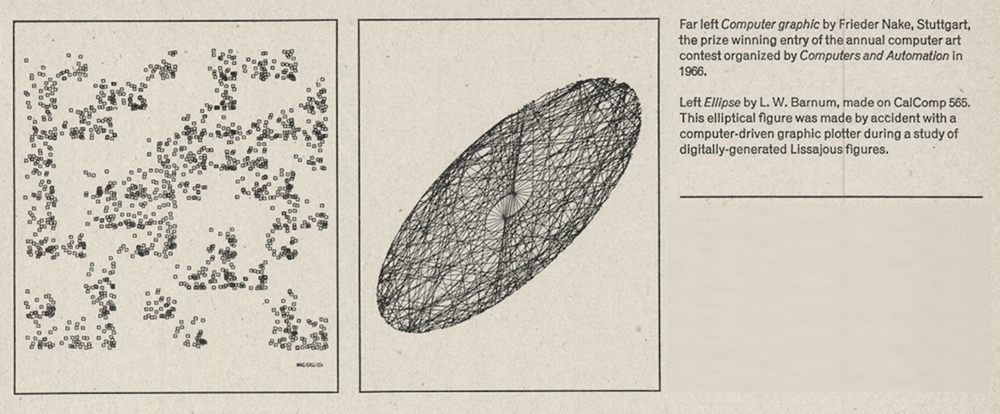

Home
/
Coracle
/ Articles
Articles
Coracle
RAD Image Format
Native and Light and Dark Theming
'trails' versus 'tails'
Other
Timeout Magazine December 1971
Observer Magazine 26th October 1969

From
Computer art/Studio International